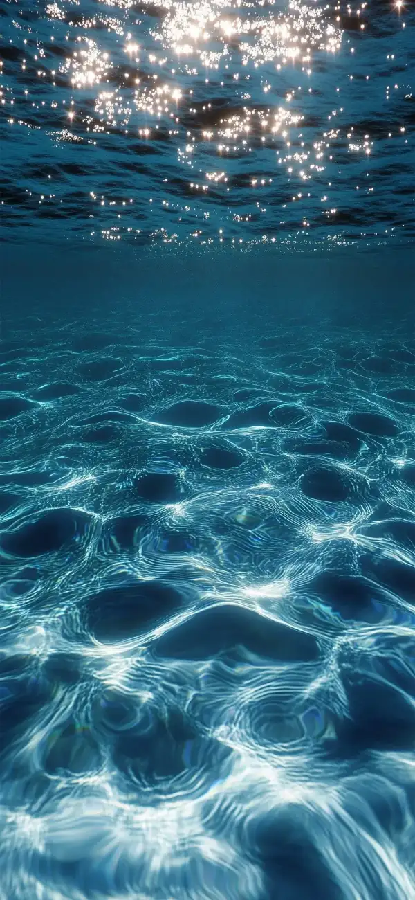
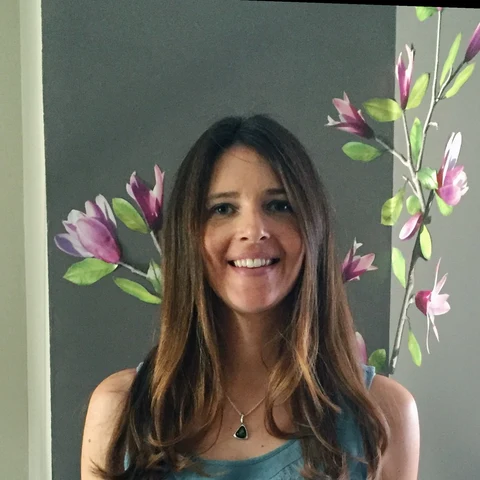

Solange
Duhamel
Understanding the role of microorganisms in biogeochemical transformations—from phosphorus cycling in the open ocean to microbial colonization of volcanic terrains—reveals how life shapes planetary chemistry and where it might emerge beyond Earth.

The Microbial Phosphorus Cycle
Phosphorus is essential for all life—it forms the backbone of DNA, drives cellular energy, and limits productivity across vast ocean regions. Our work reveals how marine microorganisms acquire, transform, and recycle phosphorus compounds, reshaping our understanding of global biogeochemical cycles. The 2025 Nature Reviews Microbiology synthesis represents two decades of research on this vital element.
Read in Nature Reviews Microbiology ↗
Research Themes
Research Highlights
Marine Phosphorus Biogeochemistry
Understanding how microorganisms mediate phosphorus cycling in the ocean, from dissolved organic P utilization to polyphosphate dynamics. Developing new single-cell methods to track element fluxes.
More
Mixotrophy & Microbial Ecophysiology
Investigating how small pigmented eukaryotes and cyanobacteria combine photosynthesis with organic matter uptake—a widespread but underappreciated metabolic strategy in the ocean.
More
Astrobiology & Volcanic Microbiology
Studying microbial colonization of freshly emplaced volcanic terrains in Iceland as analogs for understanding habitability on Mars and other planetary bodies.
More
Vertebrate–Alga Symbiosis
Exploring the remarkable endosymbiosis between green algae and spotted salamanders—the only known vertebrate–photosynthetic alga symbiosis—supported by the Gordon and Betty Moore Foundation.
More
About
Solange Duhamel
I am a marine microbiologist and biogeochemist at the University of Arizona, where I hold appointments in the Department of Molecular and Cellular Biology, the Lunar and Planetary Laboratory, the BIO5 Institute, Environmental Science, and Ecology and Evolutionary Biology. I also serve as an Adjunct Research Scientist at the Lamont-Doherty Earth Observatory of Columbia University.
My research focuses on understanding the role of microorganisms in biogeochemical transformations, their adaptation to different environments, and their stress response. I investigate how climate, nutrient bioavailability, and energy accessibility shape marine microbial growth, productivity, diversity, and distribution. Increasingly, my work explores life's potential to adapt to extreme environments and its implications for astrobiology.
I earned my Ph.D. in Marine Environmental Science from the University of Aix-Marseille II in France, followed by postdoctoral work at the University of Hawai‘i (with David Karl) and the Woods Hole Oceanographic Institution. Before joining the University of Arizona in 2019, I spent seven years on the research faculty at Columbia University's Lamont-Doherty Earth Observatory.
Current Appointments
Professor, Department of Molecular and Cellular Biology, University of Arizona 2026–present
Joint appointments: BIO5 Institute · Lunar and Planetary Laboratory · Environmental Science · Ecology and Evolutionary Biology · Genetics GIDP
Adjunct Research Scientist, Lamont-Doherty Earth Observatory, Columbia University 2019–present
Previous Appointments
Associate Professor, Department of Molecular and Cellular Biology, University of Arizona 2019–2026
Associate Research Professor, Lamont-Doherty Earth Observatory, Columbia University 2017–2019
Promoted to Senior Staff (tenure equivalent) in 2019
Assistant Research Professor, Lamont-Doherty Earth Observatory, Columbia University 2012–2016
Research Associate, American Museum of Natural History 2014–2021
Devonshire Postdoctoral Scholar, Woods Hole Oceanographic Institution 2011–2012
Postdoctoral Fellow, C-MORE, University of Hawai‘i 2008–2011
Education
Ph.D. Marine Environmental Science, University of Aix-Marseille II 2007
M.Sc. Biological Oceanography, Université Pierre & Marie Curie, Paris VI 2004
B.Sc. Organismal Biology, Université Pierre & Marie Curie, Paris VI 2002
Selected Awards & Honors